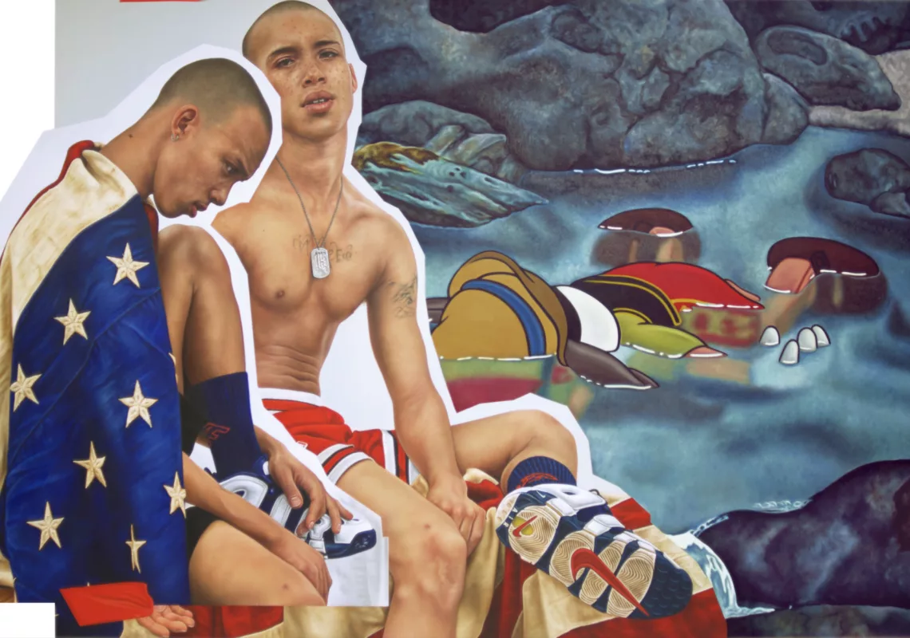
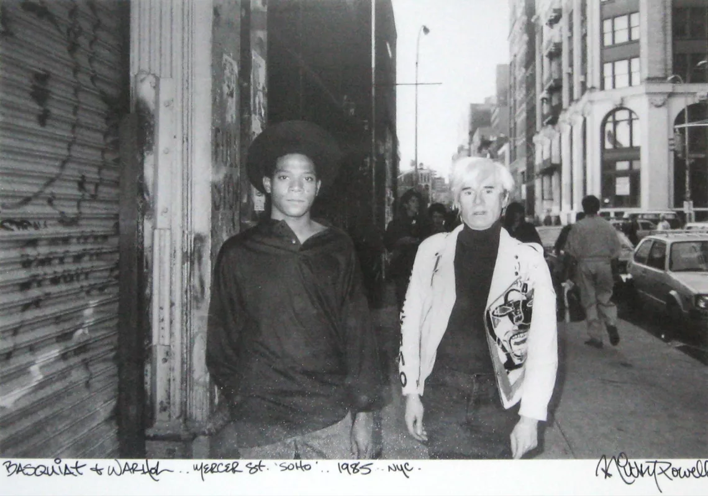
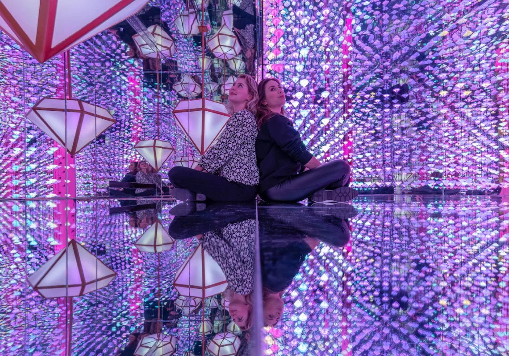
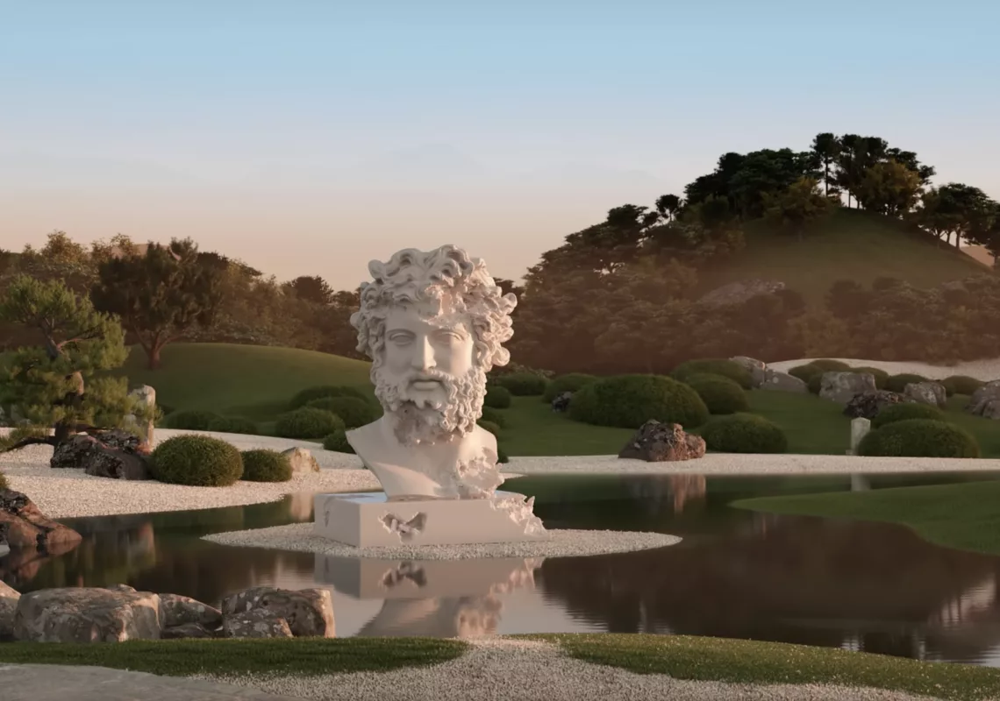
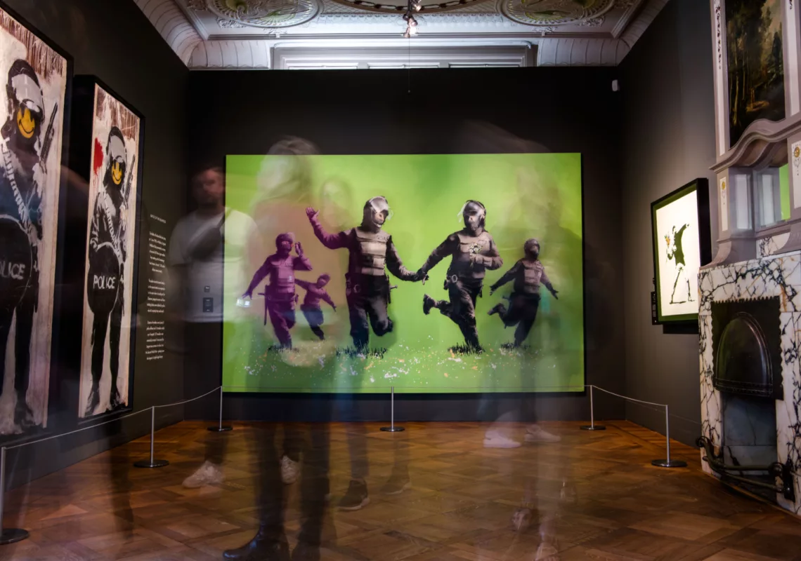
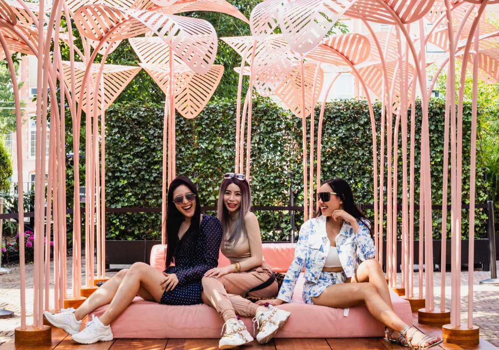
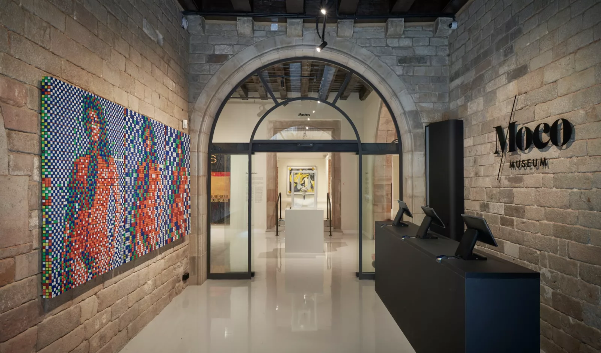
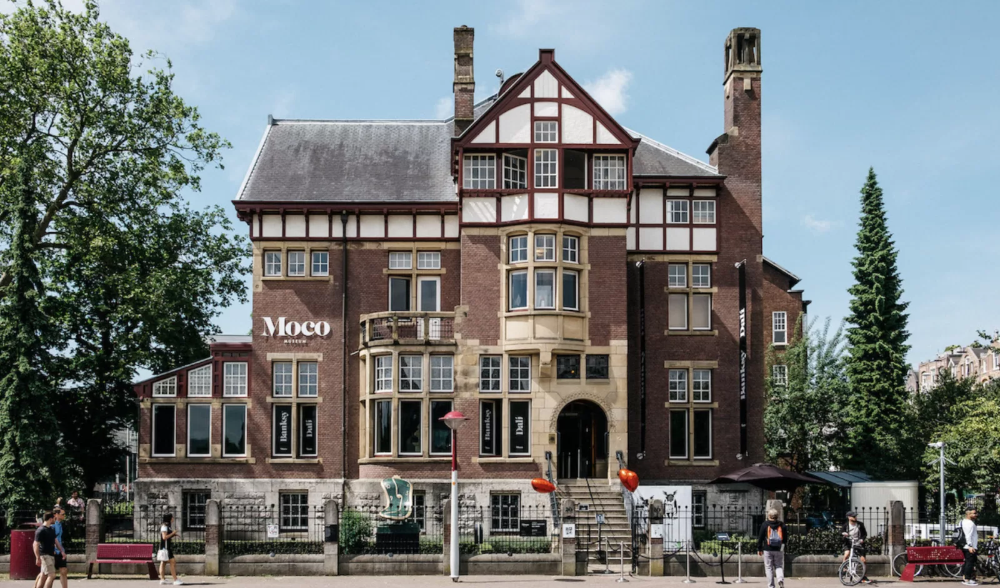

Discover our exhibitions & experiences
Before your visit, we advise you to reserve a date and time slot. Moco Museum has a limited number of tickets available per time slot. In this way, we can ensure the best experience for you! Thank you for trusting in us and art.
The Future Is Old
The Kid
Mass shooting / Individualistic indifference / Institutionalized racism / Social determinism / Inequality of Opportunity / Ever-threatened civil rights
Moco Masters Amsterdam
Meet the Icons and Rising Stars of Modern & Contemporary Art. Moco Masters celebrates artists, who we believe, stand out for their exceptional contribution to art, culture, and the world at large. Modern and contemporary art that inspires us to question the world and hope for a better future.
Reflecting Forward
“Art is like a bonfire. It is where the storytelling begins – projections, feelings, conversations, connections. We sing together. We dance together. The bonfire is a movement and an artwork. You are invited.” – Studio Irma
The New Future Amsterdam
the New FuTure – Europe’s first dedicated exhibition space to the NFT phenomenon. Moco Museum brings together a selection of NFTs from the art world’s most pioneering digital artists. These rare and unique works express the future of digital art.
Banksy Amsterdam
The 'Laugh Now' exhibition is not authorised by Banksy nor it is curated by the artist. Moco Museum features a diverse selection of original works throughout Banksy's noteworthy career.
Moco Garden
“One day Alice came to a fork in the road and saw a Cheshire cat in a tree. ‘Which road do I take?’ she asked. ‘Where do you want to go?’ was his response. ‘I don’t know,’ Alice answered. ‘Then,’ said the cat, ‘it doesn’t matter.”
Plan your visit
Before your visit, we advise you to reserve a date and time slot. Moco Museum has a limited number of tickets available per time slot. In this way, we can ensure the best experience for you! Thank you for trusting in us and art.
Moco Barcelona
Carrer de Montcada 25
El Born district
08003 Barcelona, Spain
Opening Times
Mon - Thu 10:00 - 20:00
Fri - Sun 10:00 - 21:00
Moco Amsterdam
Honthorststraat 20
Museumplein
1071 DE Amsterdam
Opening Times
Mon – Thu 09:00 – 19:00
Fri – Sun 09:00 – 21:00
